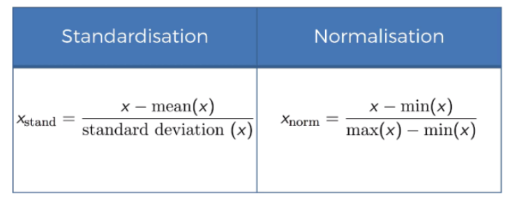

Part1 Data Pre-Processing¶
Machine Learning process¶
Data Pre-Processing¶
- Import the data
- Clean the data
- Split into training & test sets.
- Feature Scaling
Modelling¶
- Build the model
- Train the model
- Make predictions
Evaluation¶
- Calculate perfomance metrics
- Make a verdict
Feature Scalling Basic¶

Data Pre-Processing Template¶
Importing the libraries¶
import numpy as np
import pandas as pd
import matplotlib as plt
Import the dataset¶
dataset = pd.read_csv('data.csv')
## Not include last column
X = dataset.iloc[:, :-1]
## only include last column
y = dataset.iloc[:, -1]
Spliting the dataset into the Training set and Test set¶
from sklearn.model_selection import train_test_split
X_train, X_test, y_train, y_test = train_test_split(X, y, test_size = 0.2, random_state = 0)
Featur Scaling¶
from sklearn.preprocessing import StandardScaler
sc = StandardScaler()
X_train = sc.fit_transform(X_train)
X_test = sc.transform(X_test)